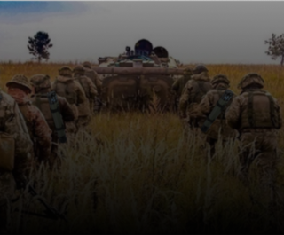

<section class="third">

  

  <div class="container">
    <p class="third__text"><span class="third__text--part">SAROS 3000</span> is a portable oxygen supply system, which can significantly increase the survivability of the Ukrainian military who are fighting the Russian occupation troops right now. </p>

    <p class="third__text"><span class="third__text--part">The SAROS 3000</span> unit is compact in size and low in weight, allowing it to be carried on the back without much difficulty, and the usefulness of this system on the battlefield is hard to overestimate.</p>
  </div>
</section>